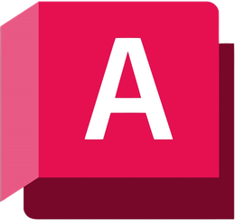
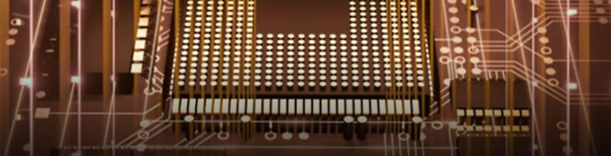

100 W
Pompa Sirkulasi
Wasser WD-101E · 220 V / 50 Hz
Proyek Kelas Mekanika Fluida · Universitas Negeri Malang
Listrik Bersih.
Listrik Bersih.
Dari Pusaran Air.
Prototipe pembangkit listrik mikro-hidro sirkulasi tertutup skala laboratorium — mengubah aliran air ber-head rendah menjadi listrik tanpa bendungan besar.
Didukung Perangkat Rekayasa
 ANSYS Fluent
ANSYS Fluent
 MATLAB
MATLAB
 VS Code
VS Code
ANSYS Fluent

AutoCADMATLAB
VS Code
Prototipe dalam Angka
Vortex Hydro dalam data teknis nyata
Dirancang, dirakit, dan diuji di laboratorium pada rangka 2,0 × 0,8 meter dengan sirkulasi air tertutup.
Tangki Ø 520 mm · Pipa Ø 45 mm · Zona Kering
330 mm
Diameter Kincir 6 Sudu
Lebar sudu 250 mm · Poros Ø 30 mm
1 : 4
Transmisi Step-Up
Pulley Ø 270 mm ke Ø 67,5 mm
10 W
Beban Output LED
2 × 5 W (12 V) · Generator DC XD 3240
Jelajahi Proyek
Akses halaman sesuai kebutuhan
Anatomi & Prinsip Kerja
Cara kerja sistem, klik setiap komponen
Air dipompa dari tangki penampung ke headbox, ditenangkan, meluncur melalui saluran miring ke kincir 6 sudu, lalu jatuh kembali dalam siklus tertutup.
1. Tangki Penampung
Silinder penampung air sirkulasi Ø 520 mm. Air bekas memutar kincir jatuh kembali ke tangki sehingga sistem tertutup dan hemat air.
2. Pompa & Pipa Hisap
Pompa Wasser WD-101E (100 W) menyedot air dari tangki bawah dan mendorongnya naik menuju bak penenang atas.
3. Pipa Dorong & Flow Meter
Pipa Ø 45 mm mengalirkan air naik di sisi rangka, dilengkapi flow meter untuk membaca debit aliran (L/s).
4. Headbox (Bak Penenang)
Menenangkan turbulensi pancaran pompa melalui sekat internal agar aliran masuk ke saluran menjadi stabil dan halus.
5. Saluran Miring
Saluran akrilik yang menyempit dari 0,416 m ke 0,28 m untuk memfokuskan energi aliran tepat ke sudu kincir.
6. Kincir Air 6 Sudu
Kincir Ø 330 mm (lebar sudu 250 mm) menangkap tumbukan aliran air dan memutar poros utama stainless Ø 30 mm.
7. Terjunan Air
Air yang telah memutar kincir dialirkan turun kembali ke tangki penampung untuk siklus berikutnya.
8. Zona Kering
Dipisahkan sekat pelindung cipratan. Pulley step-up 1:4 memutar Generator DC XD 3240 untuk menyuplai 2 lampu LED 12 V / 5 W.
Peralatan Utama
Spesifikasi komponen prototipe
01 · PembangkitGenerator XD 32401 unit · DC Magnet Permanen
02 · Sirkulasi AirWasser WD-101E1 unit · 220 V / 50 Hz · 100 W
03 · Beban OutputLampu LED 12 V2 pcs × 5 W (Total 10 W)
04 · Jalur PipaPipa SirkulasiDiameter ±45 mm · Rangka 2×0,8 m
Dokumentasi & Pengujian
Dari desain CAD hingga uji laboratorium
Tahapan ringkas perakitan prototipe, pengujian debit-RPM-daya, serta jawaban atas pertanyaan teknis yang sering diajukan.




Vortex Hydro · FAQ
Pertanyaan yang sering diajukan
Apa itu Vortex Hydro?
Simulator PLTA mikro-hidro berbasis pusaran air skala laboratorium yang dirancang, dibangun, dan diuji secara mandiri oleh mahasiswa Universitas Negeri Malang.
Mengapa memakai pompa dan sirkulasi tertutup?
Karena aliran sungai tidak mungkin dibawa ke laboratorium kampus, pompa Wasser 100 W menyirkulasikan air secara kontinu di atas rangka 2 × 0,8 m.
Apakah sistem ini butuh bendungan besar?
Tidak. Konsep turbin pusaran dirancang khusus untuk memanfaatkan aliran ber-head rendah tanpa bendungan besar.
Apakah angka di Dashboard adalah sensor langsung?
Pada versi situs statis, Dashboard memakai mesin simulasi prototipe di browser untuk mendemonstrasikan antarmuka pemantauan sambil menunggu integrasi sensor prototipe fisik asli.
Faktor apa yang memengaruhi daya listrik?
Debit aliran (Q), tinggi jatuh (H), serta efisiensi mekanis turbin dan generator (η) sesuai persamaan P = ρ·g·Q·H·η. Anda bisa mencobanya lewat Kalkulator Daya di tombol alat pojok kiri bawah.
Bagaimana cara mengakses Dashboard Admin?
Klik menu Dashboard di navbar atau ikon kunci pada Toolsbar kiri bawah, lalu masukkan kata sandi demo (pakcikiniv2).
Kami adalah perancang — membangun sistem pembangkit listrik mikro-hidro pusaran air di Fakultas Vokasi, Universitas Negeri Malang. Kolaborasi lintas disiplin menjadi inti kami, menyatukan pengurus inti dan tujuh divisi teknis dari simulasi fluida, mekanikal, kelistrikan, hingga perangkat lunak.
Tim Kepemimpinan
Klik ketua divisi untuk melihat seluruh anggotaVortex Hydro·Ringkasan
--:--:--
LIVE · SIMULASI
Admin
Ringkasan sekilas
Kondisi prototipe saat ini: sensor, tren, dan peringatan. Diperbarui setiap detik.
Debit air0L/s
Tegangan baterai0V
RPM poros utama0RPM
RPM generator0RPM
Grafik 60 detik terakhir
Indikator & Log
RPM poros
RPM generator
Riwayat kunjungan
Mode demo statis: riwayat kunjungan server dinonaktifkan di GitHub Pages.